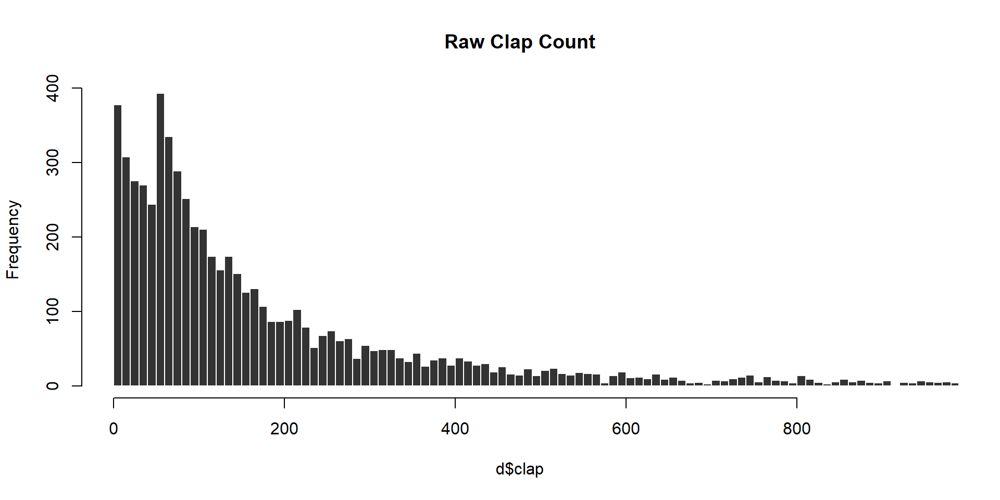

Lab 03 - Regular Expressions
DATA
This lab utilizes a free Kaggle dataset describing the popularity of articles on the blogging platform Medium.
This data allows us to study user behavior related to the stickiness of different styles of blog titles. Does the style impact whether a reader is likely to click on the blog or rate it favorably (the clap score)?
We will use the following fields:
- title - the blog title
- subtitle - blog subtitle (optional)
- claps - the number of “likes” each article received
- reading_time - time (in minutes) it takes to reach each article
- publication - Medium community in which the blog was published
- date - date of publication in style YYYY-MM-DD
URL <- "https://raw.githubusercontent.com/DS4PS/cpp-527-fall-2020/master/labs/data/medium-data-utf8-v2.csv"
d <- read.csv( URL )
preview.these <- c("title", "subtitle", "claps", "reading_time", "publication", "date")
head( d[preview.these] ) %>% pander()| title | subtitle | claps | reading_time |
|---|---|---|---|
| A Beginner’s Guide to Word Embedding with Gensim Word2Vec Model | 850 | 8 | |
| Hands-on Graph Neural Networks with PyTorch & PyTorch Geometric | 1100 | 9 | |
| How to Use ggplot2 in Python | A Grammar of Graphics for Python | 767 | 5 |
| Databricks: How to Save Files in CSV on Your Local Computer | When I work on Python projects dealing… | 354 | 4 |
| A Step-by-Step Implementation of Gradient Descent and Backpropagation | One example of building neural… | 211 | 4 |
| An Easy Introduction to SQL for Data Scientists | 563 | 8 |
| publication | date |
|---|---|
| Towards Data Science | 5/30/2019 |
| Towards Data Science | 5/30/2019 |
| Towards Data Science | 5/30/2019 |
| Towards Data Science | 5/30/2019 |
| Towards Data Science | 5/30/2019 |
| Towards Data Science | 5/30/2019 |
LAB QUESTIONS
Part 01: Data Cleaning
Step 01: Text Pre-Processing
The takeaway of PART 01 is that text is a nuanced type of data that requires attention to some of the details. You will find lots of simple text cleaning recipes that allow you to quickly convert regular text into a format amenable to content analysis and modeling. The default steps will work pretty well, but might not capture all of the edge cases.
You will rarely have enough time to identify all of the edge cases and MOST will not change the results of a study. Your level of fine-tuning will depend on whether you are in preliminary and exploratory phases of a study, or if you are fine-tuning something that needs to be 100 percent precise.
The “regular expressions” framework is powerful syntax useful for cleaning both text and numeric datasets, parsing data from strings, and formatting output in reports. Although regex takes practice to master, the important skill is understanding how to recognize common problems encountered when working with text as data and using regular expressions to fix them.
Typesetting is the practice of laying out text on a page so that it looks nice and is easy to read. Typesetting programs utilize many tools that will improve readability or branding but might cause problems for text analysis. For example, stylized quotation marks are not recognized as quotes by R, letters with accents or foreign language symbols get mistranslated into text when data is encoded as UTF-8 (the default encoding when reading data files), and long dashes will look like the subtraction operator but act like text.
### stylized quote marks
# " ’ " == " ' "
# [1] FALSE
### regular dash
# 9 - 6
# [1] 3
### long dash
# 9 – 6
# > Error: unexpected invalid token in "9 –"Strange Spaces
Typesetting utilizes a variety of whitespace characters for aesthetic purposes. Check out a list here: https://en.wikipedia.org/wiki/Whitespace_character
Some of these special spaces appear randomly in some of the titles. They will appear identical to a regular space the invisible eye but will cause problems when you are trying to split titles into words.
## [1] "normal" "types" "of" "whitespace"## [1] "four" "different types of whitespace"## four different types of whitespace## [1] "four _x_ different types of whitespace"## [1] "four different _x_ types of whitespace"## [1] "four different types _x_ of whitespace"## [1] "four different types of _x_ whitespace"Replacing special whitespaces with regular spaces:
Regular expressions have an operator “\s” that will match most types of spaces including tabs and newlines. R has some equivalent (but not identical) expressions that represent pre-defined sets of characters like numbers, letters, punctuation, and spaces. Both work fine in find-and-replace commands:
## [1] "four _x_ different _x_ types _x_ of whitespace"## [1] "four _x_ different _x_ types _x_ of whitespace"Note that the recommended regular expression “recipes” don’t address all of the whitespace problems here. They fail to identify the FIGURE SPACE character (I have no idea why that one is special). As a result, your processed text would look something like this:
# replace all spaces with regular space
v2 <- gsub( "[[:space:]]", " ", v )
strsplit( v2, " " ) %>% unlist()## [1] "four" "different" "types" "of whitespace"Your counts of “OF” and “WHITESPACE” would be off because these words are not being successfully split. Start with the generic strategy and if you are still finding cases where the string split operation is not working properly then add new gsub() steps for those specific whitespace characters.
A note about the set operator:
# STRINGS VERSUS SETS
v <- c( "a","b","c", "abc" )
# ORDER MATTERS IN STRINGS
gsub( "ab", "X", v ) # string 'ab'## [1] "a" "b" "c" "Xc"## [1] "X" "X" "c" "XXc"## [1] "a" "b" "c" "abc"## [1] "X" "X" "c" "XXc"## [1] "X" "X" "c" "XXc"## [1] "X" "X" "c" "XXc"## [1] "four _x_ different _x_ types _x_ of _x_ whitespace"## [1] "four _x_ different _x_ types _x_ of _x_ whitespace"Non-Ascii Text
Many text sources will use encodings that not only include typeset characters, but also letters with special accents or symbols from foreign languages.
## Text with non-latin ascii characters
c("Ekstr\u00f8m", "J\u00f6reskog", "bi\u00dfchen Z\u00fcrcher")## [1] "Ekstrøm" "Jöreskog" "bißchen Zürcher"It is problematic mostly when you are trying to count occurrences of things:
## [1] FALSEThe fix would be to go through and figure out every single substitution necessary to convert the text to a basic Latin encoding, which would be quite onerous.
Fortunately these libraries have already been built, making the substitutions quite simple:
x <- c("Ekstr\u00f8m", "J\u00f6reskog", "bi\u00dfchen Z\u00fcrcher")
#> [1] "Ekstrøm" "Jöreskog" "bißchen Zürcher"
stringi::stri_trans_general( x, "latin-ascii" )## [1] "Ekstrom" "Joreskog" "bisschen Zurcher"Apply Pre-Processing Steps
The titles in the current dataset are fairly clean but they still need a little pre-processing to address some issues introduced by typesetting:
- Convert strange spaces to regular spaces
- Remove HTML tags
- Convert all text to a Latin ASCII encoding
Step 02: Create a Performance Measure
We can track article performance in many ways. This dataset contains “claps”, which are the equivalent of a thumbs-up or like on other platforms.
It also contains a responses category, but that is a little more complicated to interpret because comment might be asking for clarification because the article was poorly-written or arguing a counter-point becaue the article was controversial.
We will use claps to measure article popularity, but note the skew in the raw measure:

Create a new clap score to measure performance using the following log transformation:
Create your clap score, then answer Q1A-Q1D using the clean title strings.
Part 02: Measuring Title Performance
The list below contains examples of blogs belonging to groups of title styles. Which title style consistently gets the most claps (clap score)?
Power Lists:
- “Six Recommendations for Aspiring Data Scientists”
- “13 Essential Newsletters for Data Scientists: Remastered”
- “7 Machine Learning lessons that stuck with me this year”
How to guides:
- “How to measure progress with outcomes”
- “How We Dumped A/B Testing For Machine Learning”
- “How To Be Productive Without Being Hard on Yourself”
Something Colon Something:
- “Business Checkup: 10 Ways to Improve your 2020 Communications”
- “ReFocus: Making Out-of-Focus Microscopy Images In-Focus Again”
- “Review: SqueezeNet (Image Classification)”
Questions:
- “Why Do Financial Models Break?”
- “What Is Econometrics?”
- “Can AI Robots Rebel Against Us, as Shown in Films?”
- “Can You Invest Like a Top Fund Manager?”
- “So you’re building a “Superhuman of X”?”
Other:
All other titles not included in the categories above.
Create regular expressions that allow you to identify ALL of the titles that belong in each category above (approximately one expression per style category). The regular expressions will match patterns that correspond to the stylistic genres of titles rather than trying to match any exact title.
# grepl returns TRUE for all cases that
# match the expression and FALSE otherwise
category.members <- grepl( "expression", titles )Note that some titles might belong to multiple styles. For this assignment treat each style as discrete (a title uses the style or does not) and ignore the fact that some titles might end up in a couple of categories.
![images/title-sets.png]
Also note that the OTHER category will be defined as (NOT STYLE A) AND (NOT STYLE B) etc, so you may need to review your compound regular expressions.
For each of the styles above report the following while showing your work:
Q1-A: How many titles did you identify within each category?
Q1-B: What is the average performance (clap score) of each type of title?
Q1-C: Which style of title performs the best overall?
Q1-D: Does the choice of average matter?
The average generically means the central tendency of a distribution. Note that the raw clap score (the unlogged version) is very skewed, which can impact performance statistics. Does your answer to Q1-C change if you examine the median instead of the mean?
Part 03: Content Analysis
Conduct basic content analysis by splitting each title into a set of distinct words, then answer the following:
Q2-A: What are the 25 most common words used across all titles?
Q2-B: What are the 25 most common words used within each style category above?
Q2-C: What is the most common word used at the beginning of a title?
Q2-D: What is the most common word used at the end of a title?
Hint: be sure to convert all words to the same case so that variants like “How” and “how” are treated the same.
Hint: remove punctuation so that it does not impact your word count.
## [1] "Why" "Do" "Financial" "Models" "Break?"## [1] "Why" "Do" "Financial" "Models" "Break"When splitting a title into words note that the string split function returns a list.
This is a sensible data structure since you want to keep the atomized words grouped by their original titles, but it makes it hard to do content analysis:
first.six.titles <-
c("A Beginner’s Guide to Word Embedding with Gensim Word2Vec Model",
"Hands-on Graph Neural Networks with PyTorch & PyTorch Geometric",
"How to Use ggplot2 in Python", "Databricks: How to Save Files in CSV on Your Local Computer",
"A Step-by-Step Implementation of Gradient Descent and Backpropagation",
"An Easy Introduction to SQL for Data Scientists")
word.list <- strsplit( first.six.titles, " " )
word.list## [[1]]
## [1] "A" "Beginner’s" "Guide" "to" "Word"
## [6] "Embedding" "with" "Gensim" "Word2Vec" "Model"
##
## [[2]]
## [1] "Hands-on" "Graph" "Neural" "Networks" "with" "PyTorch"
## [7] "&" "PyTorch" "Geometric"
##
## [[3]]
## [1] "How" "to" "Use" "ggplot2" "in" "Python"
##
## [[4]]
## [1] "Databricks:" "How" "to" "Save" "Files"
## [6] "in" "CSV" "on" "Your" "Local"
## [11] "Computer"
##
## [[5]]
## [1] "A" "Step-by-Step" "Implementation" "of"
## [5] "Gradient" "Descent" "and" "Backpropagation"
##
## [[6]]
## [1] "An" "Easy" "Introduction" "to" "SQL"
## [6] "for" "Data" "Scientists"Similar to re-casting data types, you can convert the list to a character vector using unlist():
## [1] "A" "Beginner’s" "Guide" "to"
## [5] "Word" "Embedding" "with" "Gensim"
## [9] "Word2Vec" "Model" "Hands-on" "Graph"
## [13] "Neural" "Networks" "with" "PyTorch"
## [17] "&" "PyTorch" "Geometric" "How"
## [21] "to" "Use" "ggplot2" "in"
## [25] "Python" "Databricks:" "How" "to"
## [29] "Save" "Files" "in" "CSV"
## [33] "on" "Your" "Local" "Computer"
## [37] "A" "Step-by-Step" "Implementation" "of"
## [41] "Gradient" "Descent" "and" "Backpropagation"
## [45] "An" "Easy" "Introduction" "to"
## [49] "SQL" "for" "Data" "Scientists"Counting the first or last words:
These questions require you to break into the list version of the results and extract either the first or last word from each.
# x is a single title
get_first_word <- function( x )
{
# split title x into words
# unlist results
# select the first word
# return first word
}
# test your function
x <- d$title[1]
get_first_word( x )When results are stored as lists there is an extra step to the analysis.
You need to apply your function to each element in the list. There are several versions of apply() functions in R.
- lapply() applies the function to a list and returns a list
- sapply() applies the function to a list and returns a vector
lapply version:
# lapply applies the length function to each list element and returns a list
word.list <- strsplit( first.six.titles, " " )
word.count <- lapply( word.list, length )
word.count <- unlist( word.count ) # convert to a vector
word.count## [1] 10 9 6 11 8 8# sapply applies the function to all titles in the vector
# the default prints the original title with the return values
word.list <- strsplit( first.six.titles, " " )
sapply( word.list, length )## [1] 10 9 6 11 8 8To create a vector of the first title words only would then be something like:
# add USE.NAMES=F to only print return values
sapply( first.six.titles, get_first_word, USE.NAMES=FALSE )The apply functions are a more efficient version of loops - the repetition of a single operation over and over on different data elements. So the logic would be equivalent to this loop version:
Loops are effective for these types of analysis, but are extremely inefficient as the size of your dataset grows and should be avoided when possible.
And as you become more comfortable with lists they become easier to manage:
## [1] 10 9 6 11 8 8Part 04: Title Length
Does the length of the title matter?
Q3-A: Do titles with more words get better clap scores?
Count the number of words in each title.
Then examine the clap score as a function of word count by regressing the clap score onto word count.
Visualize the relationship using a box and whisker plot:
Q3-B: Do longer titles get better clap scores?
Repeat the analysis from Q3-A but this time measuring title length by the number of characters in the title.
CHALLENGE QUESTIONS
Challenge Q1
Is it better to use common words or unique words in your title?
Create a count of the number of times each word appears in the collection of titles.
Create a variable for the group of words that appear in the bottom quartile (0-25%) of frequencies.
Create a variable for the group of words that appear in the top quartile (75-100%) of frequencies.
Q-A: Are simple titles better?
Is performance a function of common words used?
Create a box and whisker plot showing clap scores as a function of the number of common words used.
Regress the clap score onto the numer or proportion of common words.
Q-B: Are niche titles better?
Is performance a function of uncommon words used?
Create a box and whisker plot showing clap scores as a function of the number of uncommon words used.
Regress the clap score onto the numer or proportion of uncommon words.
Creating top and bottom percentile categories:
# x <- sample( 1:100, 25, replace=T )
# dput( sort( x ) )
x <- c(1L, 2L, 19L, 19L, 20L, 21L, 23L, 24L, 31L, 34L, 36L, 40L, 48L,
50L, 51L, 56L, 63L, 67L, 73L, 74L, 83L, 84L, 91L, 92L, 96L)
summary( x )## Min. 1st Qu. Median Mean 3rd Qu. Max.
## 1.00 23.00 48.00 47.92 73.00 96.00## 0% 25% 50% 75% 100%
## 1 23 48 73 96# rank x by order and percentile
rank.x <- rank(x)
centile.x <- 100 * ( rank(x) / length(x) )
# create variable by values break points
x.25 <- quantile( x, probs=0.25 )
x.75 <- quantile( x, probs=0.75 )
top.25.x <- as.numeric( x >= x.75 ) # x >= 73
bot.25.x <- as.numeric( x <= x.25 ) # x <= 23
# create variable by percentile break points
top.25.x <- as.numeric( centile.x >= 75 ) # x >= 73
bot.25.x <- as.numeric( centile.x <= 25 ) # x <= 23
data.frame( x, rank.x, centile.x, top.25.x, bot.25.x ) %>% pander()| x | rank.x | centile.x | top.25.x | bot.25.x |
|---|---|---|---|---|
| 1 | 1 | 4 | 0 | 1 |
| 2 | 2 | 8 | 0 | 1 |
| 19 | 3.5 | 14 | 0 | 1 |
| 19 | 3.5 | 14 | 0 | 1 |
| 20 | 5 | 20 | 0 | 1 |
| 21 | 6 | 24 | 0 | 1 |
| 23 | 7 | 28 | 0 | 0 |
| 24 | 8 | 32 | 0 | 0 |
| 31 | 9 | 36 | 0 | 0 |
| 34 | 10 | 40 | 0 | 0 |
| 36 | 11 | 44 | 0 | 0 |
| 40 | 12 | 48 | 0 | 0 |
| 48 | 13 | 52 | 0 | 0 |
| 50 | 14 | 56 | 0 | 0 |
| 51 | 15 | 60 | 0 | 0 |
| 56 | 16 | 64 | 0 | 0 |
| 63 | 17 | 68 | 0 | 0 |
| 67 | 18 | 72 | 0 | 0 |
| 73 | 19 | 76 | 1 | 0 |
| 74 | 20 | 80 | 1 | 0 |
| 83 | 21 | 84 | 1 | 0 |
| 84 | 22 | 88 | 1 | 0 |
| 91 | 23 | 92 | 1 | 0 |
| 92 | 24 | 96 | 1 | 0 |
| 96 | 25 | 100 | 1 | 0 |
Challenge Q2
Find a package in R that will tabulate sentiment scores for a set of text.
These packages will return counts or percentages of words with positive salience (e.g. happiness, joy, laughed) and counts or percentages with negative salience (e.g. hate, disdain, smirk).
Which titles perform better? Those with high positive salience? Or those with high negative salience?
Challenge Q3
Put all of the steps above together into a single regression model:
- Title style
- Title length
- Large proportion of 100 most common words
Add some additional controls:
- Presence or absence of a subtitle
- Length of the article (time it takes to read)
- Months since it was published
- The Medium community in which the blog appears:
| Better Humans | Better Marketing | Data Driven Investor | The Startup |
|---|---|---|---|
| 28 | 242 | 778 | 3041 |
| The Writing Cooperative | Towards Data Science | UX Collective |
|---|---|---|
| 403 | 1461 | 555 |
You are also free to add additional features of the titles that you create with regular expressions.
Q: Which factors best predict article performance overall?
Submission Instructions
When you have completed your assignment, knit your RMD file to generate your rendered HTML file. Submit both your RMD and HTML files.
Be sure to use proper markdown formatting and whenever possible highlight your answers so they are easy to read.
Login to Canvas at http://canvas.asu.edu and navigate to the assignments tab in the course repository. Upload your zipped folder to the appropriate lab submission link.
Remember to:
- name your files according to the convention: Lab-##-LastName.Rmd
- show your solution, include your code.
- do not print excessive output (like a full data set).
- follow appropriate style guidelines (spaces between arguments, etc.).
Notes on Knitting
Note that when you knit a file, it starts from a blank slate. You might have packages loaded or datasets active on your local machine, so you can run code chunks fine. But when you knit you might get errors that functions cannot be located or datasets don’t exist. Be sure that you have included chunks to load these in your RMD file.
Your RMD file will not knit if you have errors in your code. If you
get stuck on a question, just add eval=F to the code chunk
and it will be ignored when you knit your file. That way I can give you
credit for attempting the question and provide guidance on fixing the
problem.
Markdown Trouble?
If you are having problems with your RMD file, visit the RMD File Styles and Knitting Tips manual.